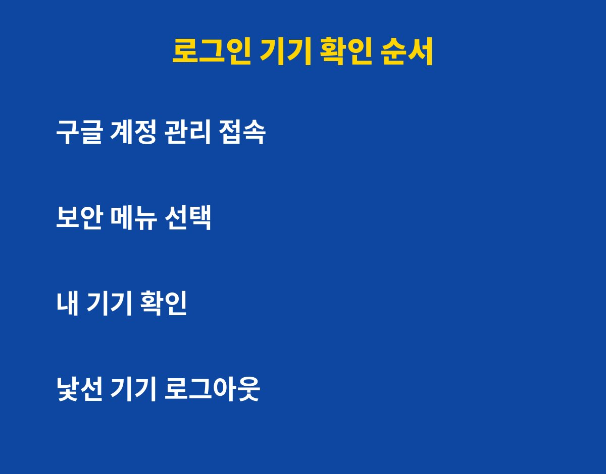

구글 계정 로그인 기기는 설정에서 3분이면 전부 확인할 수 있고, 낯선 기기가 있다면 바로 로그아웃시킬 수 있어요. 구글 계정을 메일·사진·결제까지 한 번에 쓰고 계신다면, 오래전에 로그인해 두고 잊은 기기가 오히려 가장 위험할 수 있어요. 이유는 아래에 있어요.
구글 계정은 한 번 로그인하면 기기마다 로그인 상태가 계속 유지돼요. 그래서 중고로 팔았거나 가족에게 넘겨준 폰, 회사 PC, PC방에서 접속한 기록이 그대로 남아 있는 경우가 많아요.
문제는 이런 기기가 내 계정 메일과 사진, 저장된 비밀번호에 접근할 수 있다는 점이에요. 내가 안 쓰는 기기라도 로그인 상태면 계정 문은 열려 있는 셈이에요.
순서는 간단해요. 구글 앱이나 브라우저에서 구글 계정 관리 화면으로 들어가 보안 메뉴를 열어요. 그다음 내 기기 항목에서 현재 로그인된 기기 목록을 볼 수 있어요.
| 확인 항목 | 이렇게 판단해요 |
|---|---|
| 기기 이름·종류 | 내가 쓰는 폰·PC가 맞는지 확인 |
| 마지막 접속 시간 | 오래 안 쓴 기기는 정리 대상 |
| 접속 위치 | 가본 적 없는 지역이면 의심 |
| 낯선 기기 | 즉시 로그아웃 후 비밀번호 변경 |

아니에요. 로그아웃만 하고 끝내면 같은 비밀번호로 다시 들어올 수 있어요. 그래서 로그아웃 직후 비밀번호를 바꾸는 것까지 한 세트로 하셔야 해요.
비밀번호는 다른 사이트와 겹치지 않게 새로 만들고, 가능하면 2단계 인증도 함께 켜 두세요. 패스키를 쓸 수 있다면 비밀번호 유출 걱정을 크게 줄일 수 있어요.
첫째, 복구용 이메일과 전화번호가 지금도 내 것이 맞는지 확인해요. 예전 번호가 남아 있으면 정작 위급할 때 계정을 되찾기 어려워요.
둘째, 서드파티 앱 연결 목록도 들여다보세요. 예전에 구글로 로그인했던 서비스 중 안 쓰는 곳은 연결을 끊는 게 좋아요.
셋째, 이 점검을 한 번으로 끝내지 말고 가끔 반복해 주세요. 새 폰으로 바꾸거나 공용 PC를 쓴 날에는 특히 한 번씩 확인하는 습관이 안전해요.
오늘 알려드린 방법은 3분이면 충분해요. 지금 바로 폰을 열어 내 기기 목록부터 확인해 보세요. 도움이 됐다면 구독해 두시고 다음 IT 생활 팁도 받아 보세요.
기사·공식 발표 기준이며 출시·가격 정보는 바뀔 수 있어요.